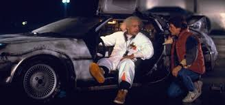

BLOG DE FILMES E DESENHOS NERD's

De Volta para o Futuro" (1985) segue Marty McFly, um adolescente dos anos 80 acidentalmente enviado para 1955 em um DeLorean criado pelo excêntrico Dr. Emmett Brown. Preso no passado, Marty precisa garantir que seus pais se apaixonem para salvar sua própria existência, enquanto tenta encontrar uma forma de voltar para 1985.